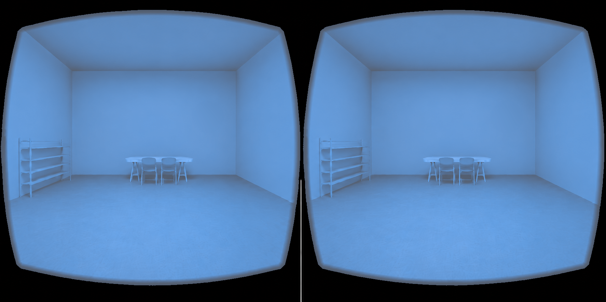

NeuroColor Atlas – 17-Condition iPhone VR Experiment
The project has been rebuilt around the supplied stereoscopic room reference. All 17 stimulus files retain the same room geometry, table, chairs, shoe rack, headset mask, and binocular alignment. The moving cue is generated separately so that it can move subtly and synchronously in both eye views.

Open the VR ExperimentRecommended iPhone use: host this folder over HTTPS, open it in Safari, add it to the Home Screen, launch it from the Home Screen, rotate to landscape, and then press Start Full-Screen Experiment.
The experiment requests fullscreen, landscape orientation, and a screen wake lock when supported. It also saves event logs as CSV or JSON at completion.